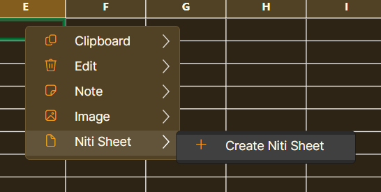

1. Start and screen overview
Niti Sheet is a desktop spreadsheet program. A typical workflow is: create/open a workbook, enter data, format or calculate it, save it, then print or export the result.
- Choose File → New for a blank workbook, or File → Open to continue a saved workbook.
- Click a cell, type a value, and press Enter. Use the formula bar for longer values and formulas.
- Save regularly with File → Save.

2. File tab
Select File in the ribbon.
| Button | Use |
|---|---|
| New | Creates a blank workbook. |
| Open | Opens an existing Niti Sheet workbook from your computer. |
| Save | Saves the current workbook, including sheets, values, formulas and formatting. |
| CSV Import | Imports a comma-separated-value table into a sheet. |
| CSV Export | Exports simple sheet data as a CSV file for use in another program. |

3. Home tab
Select the target cell or range first, then choose Home.
| Button | Use |
|---|---|
| Paste / Copy / Cut | Pastes copied cells, copies a selection, or moves a selection. |
| Undo / Redo | Reverses the latest action or restores an undone action. |
| Font / size | Sets the font family and size for selected cells. |
| Bold / Italic | Applies bold or italic text. |
| Fill / Text | Changes the cell background or text colour; each palette has a reset option. |
| Left / Center / Right | Aligns cell content horizontally. |
| Wrap | Displays long cell content on multiple lines. |
| Auto Size | Resizes selected cells to suit their contents. |
| Layout | Contains Merge Cells, Unmerge Cells, Wrap Text, Auto Size Cells, AutoFit Columns and AutoFit Rows. |


4. Insert tab
Select Insert in the ribbon.
| Group | Button and use |
|---|---|
| Sheets | New adds a worksheet; Rename changes the active sheet name; Delete removes the active sheet. |
| Nested Cell | Open opens a detail sheet attached to the selected cell. Close returns to the parent worksheet. |
| Chart | Chart shows a chart; Insert creates one from selected data; Copy, Cut, Paste, Edit and Delete manage the selected chart. |
| Image | Image imports an image; Delete removes the selected image. |
| Table | Formats the selected range as a table. |

5. Data tab: data tools, quality and forms
Select Data in the ribbon.
| Group | Button and use |
|---|---|
| Import Export | CSV Import and Export exchange simple tables. The JSON button is for its own structured-data function; it is not the Chatbot Create button. |
| Sort Filter | A–Z and Z–A sort the selected column. Filter shows rows meeting a condition; Clear removes the active filter. |
| Quality | Dashboard opens the data-quality dashboard. Designer opens the Schema-to-Form Designer. |
| Conditions | Validate sets a validation rule; Check checks against configured rules; Clear removes validation; High/Low applies conditional highlighting. |


Validation, forms and Nested Sheet fields
Select a range, then choose Data → Conditions → Validate to set an input rule. Use Check to check configured rules. In the Designer, define the field information and use View → Show Form when ready to enter data through the form.
Create a Nested Sheet through validation
- Open Data → Quality → Designer and add or select the field.
- Open the field’s Input Rules.
- Set Input type to Nested Sheet.
- Set the field rules required for that field: Required, Unique, Allow null/blank, Default value and Example value.
- Under Nested schema designer, choose Design Nested Schema to define the columns/fields of the child sheet.
- In Design Nested Schema, choose Add Master Formula. Enter the master cell name (for example,
1!), select or enter a Master Shell formula, then choose Add. The formula is applied when a nested sheet is created from the schema.


6. Data → Chatbot → Create
This is the Intent / FAQ chatbot workflow. It is separate from Batch Edit and should be used only when you are creating or managing chatbot intents.
- Choose Data → Chatbot → Create.
- When Intent Workspace asks whether to create an Intent / FAQ sheet, choose Create Intent Sheet.
- In the Intent / FAQ Workspace, choose New Intent, then enter the intent label, primary language, primary response, example questions and optional localized responses.
- Use the test panel to enter a user question and choose Run Test. Use Capture Baseline before changing intent examples if you want to compare results later.
- Use the export option that matches where the completed chatbot will be used.
Five chatbot export options
| Export | What it creates |
|---|---|
| Export Package | A chatbot-ready assistant package containing the Intent / FAQ data. |
| Export Embed | A standalone embedded chatbot demo page and an iframe embed snippet for a website. |
| Export Widget | A floating chatbot widget loader, companion chatbot page and snippet. |
| Client Bundle | A ready-to-share folder containing assistant JSON, embed page, widget files, snippets and README; repeated exports retain version history. |
| Hosted Config | A server-oriented configuration JSON containing the assistant payload, branding, analytics settings and asset-file names for a hosted bot setup. |


7. Data → Batch Edit
Batch Edit is a separate spreadsheet tool. It does not create or manage chatbot intents.
- Choose Data → Batch Edit → Batch.
- Choose the operation, for example Remove duplicate rows.
- Choose where to apply it, such as All used cells.
- For duplicate removal, choose the column used for comparison.
- Read the message explaining the result, then choose Apply or Cancel.

8. Right-click row and column menus
Right-click a column letter or row number for commands that apply to that whole column or row.


Cell right-click menu
Right-click a cell for Clipboard commands, Add Note, Import Image and Niti Sheet options.
Create a Niti Sheet from a cell
- Right-click the cell that will hold the nested sheet.
- Choose Niti Sheet ? Create Niti Sheet.
- The cell receives a nested Niti Sheet. Open the same menu or double-click it to work with the nested sheet.



9. Review and View tabs
Review
Review → Find locates text or values. Review → Replace finds matching values and replaces them; review the target carefully before applying a broad replacement.

View
| Button | Use |
|---|---|
| Show Form | Opens the current sheet as a form. |
| Master Shell: Show / Formula | Shows/hides the Master Shell row or sets its formula. |
| Zoom Out / Reset / Zoom In | Changes the worksheet display scale. |
| Softer / Stronger | Changes the grid-line visibility. |
| Theme | Chooses a light or soft-dark appearance theme. |
| Setup / Print / PDF / Show Area | Controls page setup, printing, PDF output and print-area display. |


10. Print and PDF
- Choose View → Setup.
- Set paper, orientation, dimensions, margins and print range.
- Choose View → Print for a printer, or View → PDF for PDF output.
- Check the preview before final output.


11. Complete reference: saving, formulas, import, forms and licensing
Save, autosave and recovery
- Choose File ? Save. The first save asks for a file name and location; later saves use the same path.
- An asterisk in the title means the workbook has unsaved changes.
- On a normal close, choose Save, Don?t Save, or Cancel.
- After an unexpected close or power loss, Niti Sheet can offer the latest autosave backup on the next launch. Choose Yes to open it or No to ignore that backup.
Formula entry and references
- Formulas begin with
=. The formula bar and selected cell show the same formula/value. - Use the function picker to insert a function skeleton such as
=AVERAGE(). - Press F3 to enter range-pick mode; select a cell/range, then press Enter once to insert the reference. Press Escape to cancel.
- Press F4 to cycle a reference through A1, $A$1, A$1 and $A1.
- Examples:
=SUM(A1:A10),='Sheet 2'!A1, and nested-sheet path=A2#B6#H6.
CSV import choices
Choose File ? CSV Import or Data ? Import Export ? CSV Import. Before importing, select whether to replace current cells or append below existing data. Multiple CSV files can be imported as one batch. When duplicate removal is selected, choose the header/column used for matching; the first row is treated as the header.
Charts and images
Use Insert ? Chart ? Insert to create a chart from selected data. Charts can be copied, cut, pasted, edited, deleted, moved and resized. Use Insert ? Image to import an image; images can be moved, resized and are saved with the workbook.
Master Shell row
Choose View ? Master Shell ? Show to display the optional fixed bottom row. Choose Formula to set its formula. Master cells use names such as 1!, 2! and 3!.
JSON Data Centre
The Data ? Import Export ? JSON button is separate from Chatbot Create. Plain JSON exports typed records and represents nested Niti Sheets as nested objects. Complete Sheet JSON preserves workbook information such as formulas, styles, validations, notes, charts, images, merged ranges and sizes. JSON import can create nested Niti Sheets from nested objects or arrays.
Form View
Choose View ? Show Form to edit the current sheet row by row. The form provides previous, next and new-row navigation; writes edits back to the worksheet; and can open nested Niti Sheets in their own form windows. List, true/false, date, time and date-time fields use appropriate editors, while invalid values show an inline error.
Print Preview
Choose View ? Print to open Niti Sheet?s internal print preview. From the preview, use Page Setup, Save PDF, Save HTML or Close. Use View ? Show Area to show or hide the printable page-area boundaries in the worksheet.
Licensing
Use the License button in the title bar to activate a paid license or demo. Without an active license, you can still work in memory with sheets, formulas, imports, charts, forms, formatting and print preview; saving a .cellsheet workbook, autosave, CSV export and JSON sheet export can be restricted until activation succeeds.
Useful mouse and keyboard actions
- Right-click a cell ? Niti Sheet ? Create Niti Sheet creates a nested sheet.
- Double-click opens an existing nested sheet; it does not create one by accident.
- Alt-click a cell containing an
http://orhttps://link to open it in the default browser. - Click a column letter or row number to select that full column or row. Use Shift to extend a selection.